Faculdade de Enfermagem · UFPel · Fundada em 1976
Um guia interativo sobre avaliação, limpeza, preparo do leito e coberturas para feridas crónicas e agudas.
Iniciar aprendizado →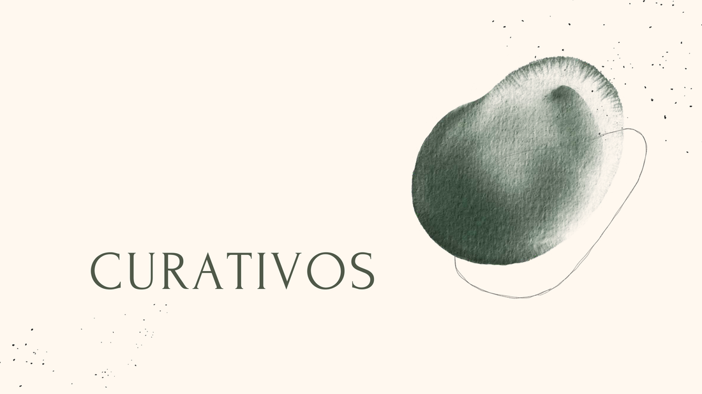
Imagem-base extraída do PDF da aulaMódulo 01
As coberturas classificam-se pela forma como interagem com o tecido em cicatrização. Conhecer cada categoria orienta a escolha terapêutica ideal.
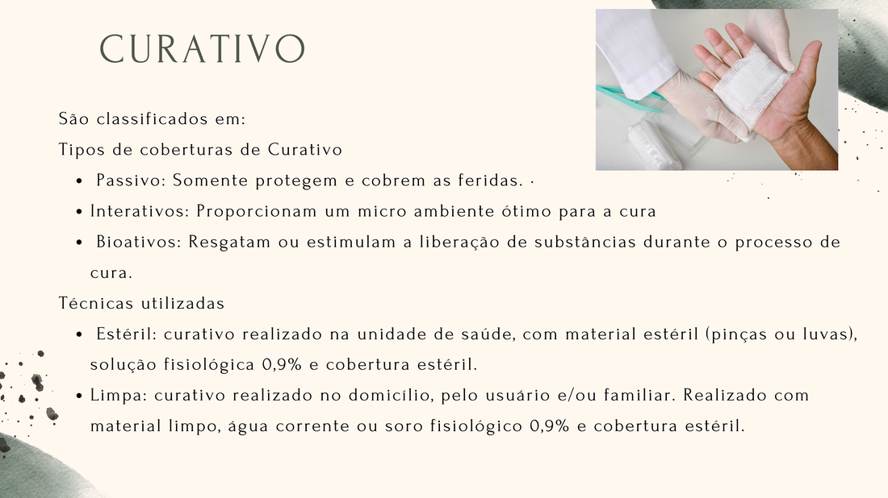
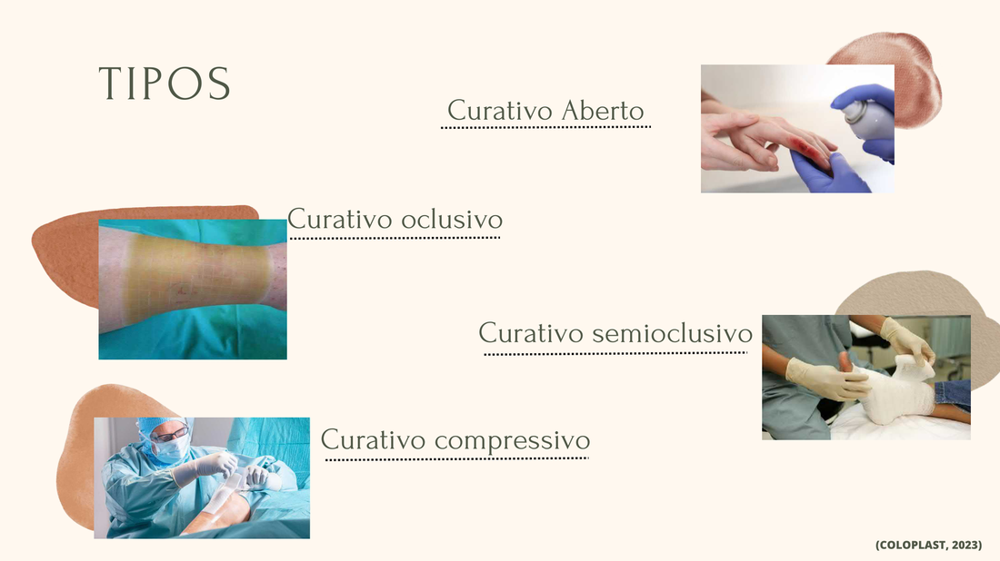
Técnicas
Módulo 02
Ferramenta estruturada para avaliação sistemática do leito da ferida e da pessoa. Cada letra direciona um domínio de avaliação.
Módulo 03
Sequência técnica para a realização do curativo, baseada em princípios de assepsia, preparo do leito e documentação clínica.
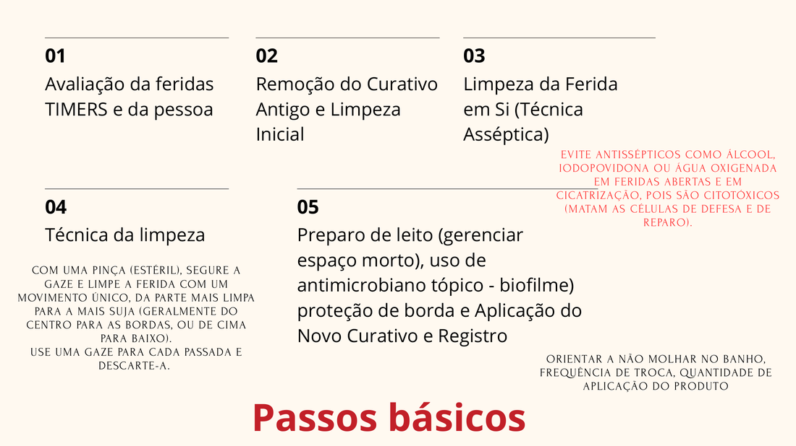
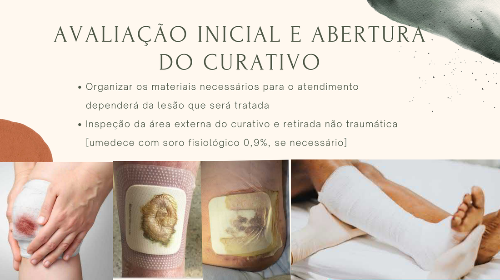
Módulo 04
A limpeza adequada remove restos celulares, exsudato e tecidos inviáveis, preservando o tecido de granulação e prevenindo infecção.
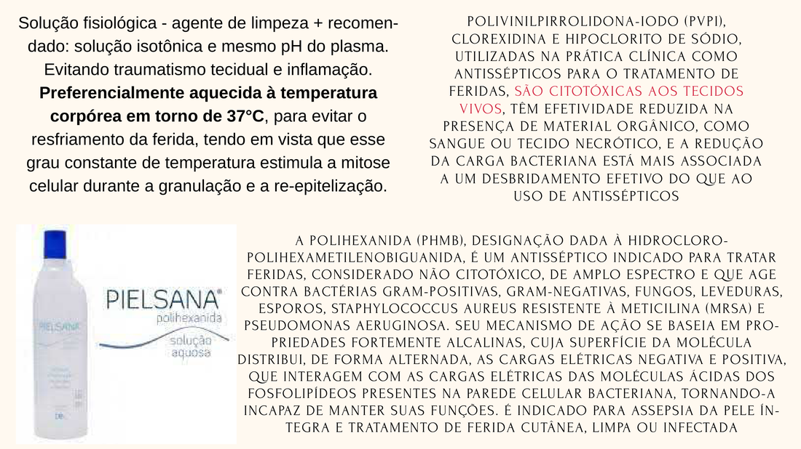
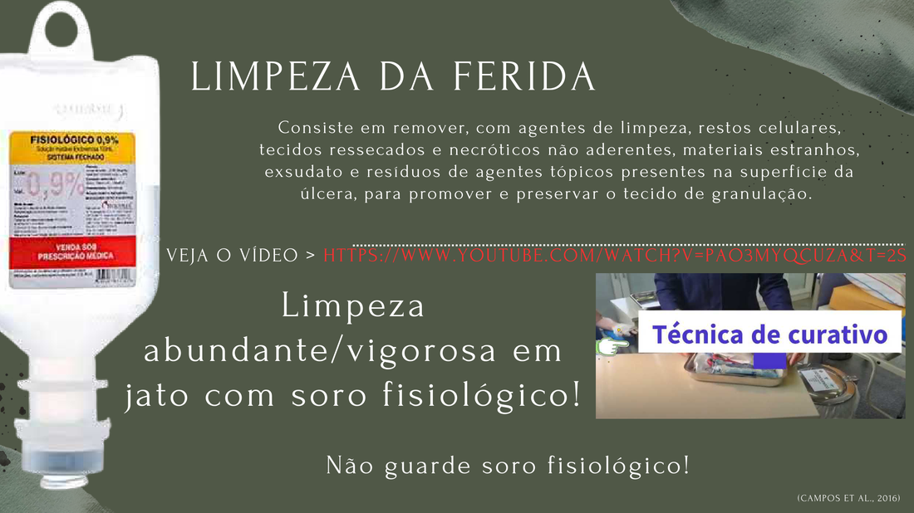
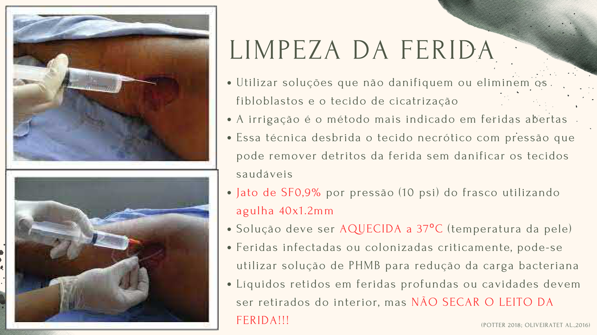
PVPI (Iodopovidona), Clorexidina e Hipoclorito de Sódio são citotóxicos aos tecidos vivos, têm efetividade reduzida na presença de material orgânico e não devem ser usados em feridas abertas em cicatrização.
A redução da carga bacteriana está mais associada a um desbridamento efetivo do que ao uso de antissépticos.
Não guarde soro fisiológico aberto. Use e descarte. Frascos abertos tornam-se vetor de contaminação.
Módulo 04b
Objetivo: remover tecidos inviáveis → reduzir carga bacteriana → preservar tecidos viáveis → preparar o leito para cicatrização.
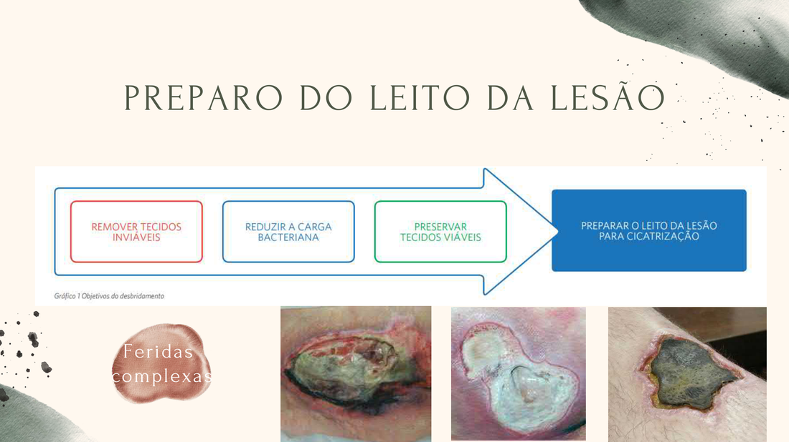
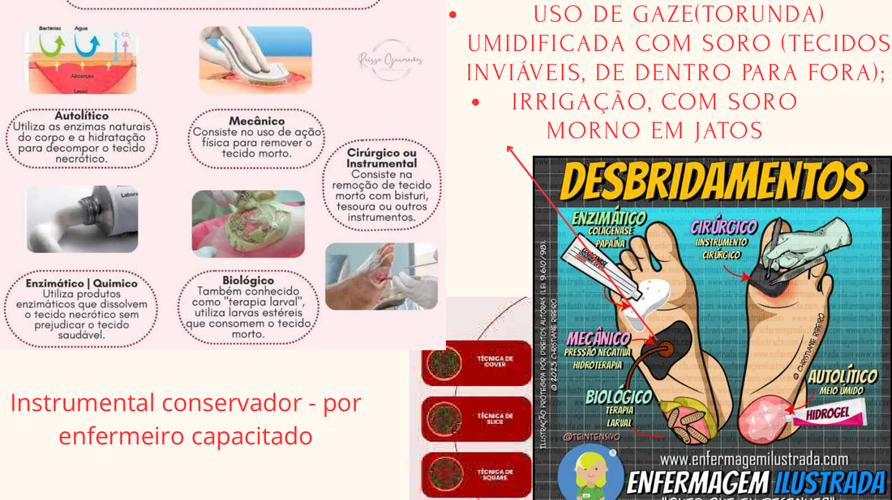
Utiliza as enzimas naturais do corpo e a hidratação para decompor o tecido necrótico. Obtido com coberturas que mantêm meio úmido (hidrogel, filmes). Processo mais lento, porém seletivo e atraumático.
Uso de ação física para remover tecido morto: irrigação com jato pressurizado, torunda úmida (de dentro para fora). Técnica simples, indicada ao enfermeiro capacitado.
Utiliza produtos enzimáticos (colagenase, papaína) que dissolvem o tecido necrótico sem prejudicar o tecido saudável. Seletivo e eficaz. Atenção à concentração da papaína.
Remoção do tecido morto com bisturi, tesoura ou outros instrumentos. Método mais rápido. O instrumental conservador deve ser realizado por enfermeiro capacitado.
Terapia com larvas estéreis que consomem seletivamente o tecido morto. Indicado em casos refratários com biofilme persistente. Promove limpeza precisa sem dano ao tecido viável.
⚠ Competência exclusiva do enfermeiro capacitado. Técnicas COVER, SLICE e SQUARE são variações baseadas na localização e morfologia do tecido necrótico.
Módulo 05
A escolha da cobertura depende do tipo de ferida, quantidade de exsudato, presença de infecção e fase do processo cicatricial.
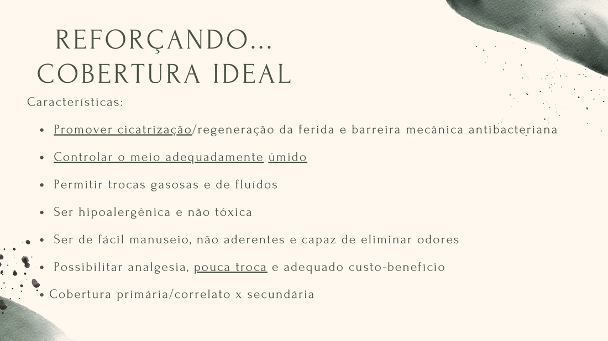
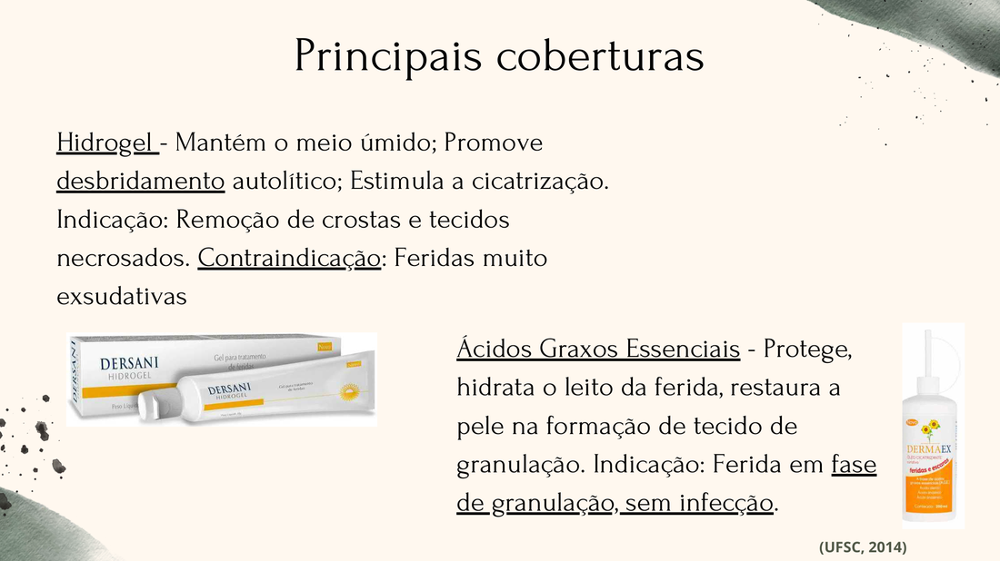
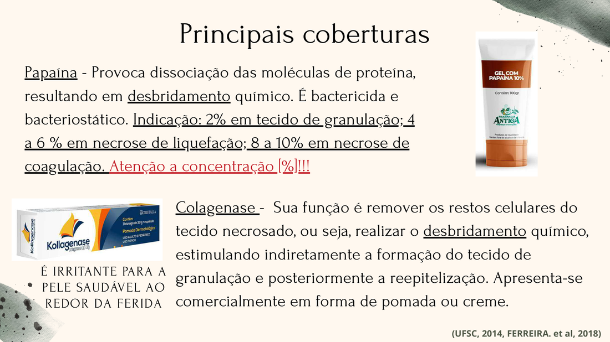
| Cobertura | Mecanismo | Indicação | Contraindicação |
|---|---|---|---|
| Hidrogel | Mantém meio úmido; promove desbridamento autolítico; estimula cicatrização | Necrose secaCrostasTecido desvitalizado | Feridas muito exsudativas |
| Ácidos Graxos Essenciais (AGE) | Protege e hidrata o leito; restaura a pele; forma filme lipídico barreira | Granulação sem infecçãoPerilesãoPrevenção | Feridas infectadas |
| Papaína | Desbridamento químico por dissociação proteica; bactericida e bacteriostático | 2% — Granulação4–6% — Necrose liq.8–10% — Necrose coag. | Atenção: irritante na pele sã |
| Colagenase | Remove restos celulares necrosados; estimula indiretamente a granulação e reepitelização | Necrose de coagulaçãoEsfacelos | Pele perilesional saudável — irritante |
| PHMB (Polihexanida) | Antisséptico não citotóxico; desestrutura a parede celular bacteriana por carga elétrica | Feridas infectadasColonizadas criticamenteMRSA | Hipersensibilidade |
| Proteção de Borda | Barreira lipídica ou polimérica contra maceração (Cavilon, Comfeel Barrier Cream, Bepantriz) | Perilesão maceradaPrevenção | Alergia ao componente |
Módulo 06
Uma cobertura ideal deve reunir múltiplas propriedades para maximizar o processo de cicatrização com segurança e eficácia.
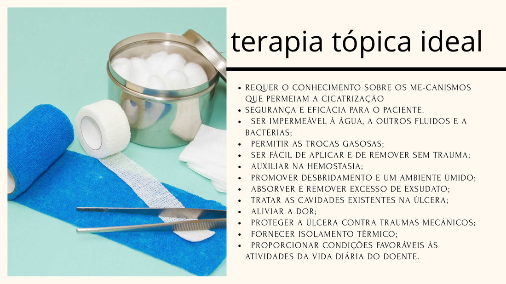
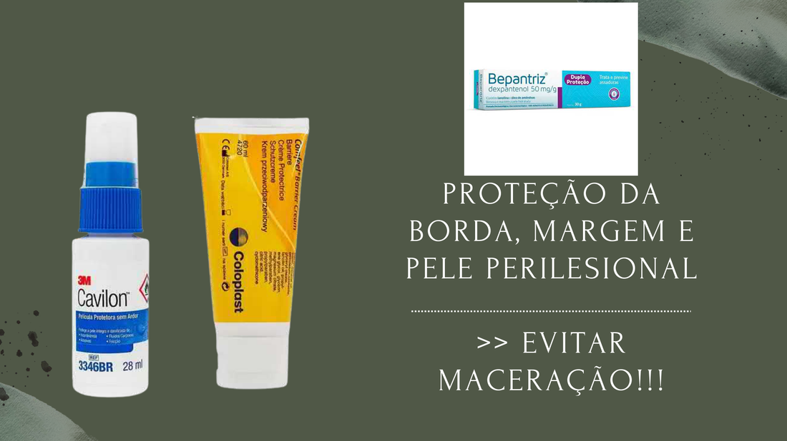
Impermeável à água, fluidos e bactérias. Permite trocas gasosas sem exposição à contaminação externa.
Simples de aplicar e remover sem trauma. Não adere ao leito. Elimina odores e possibilita analgesia.
Controla o exsudato e mantém o leito adequadamente úmido para migração celular e angiogênese.
Auxilia na hemostasia e protege contra traumas mecânicos externos durante as atividades diárias.
Mantém a temperatura do leito da ferida próxima de 37°C, estimulando a atividade celular e a granulação.
Pouca frequência de troca, não citotóxica, hipoalergênica. O custo total do tratamento importa mais que o da cobertura.
Fixação
Teste seus conhecimentos sobre curativos e coberturas.